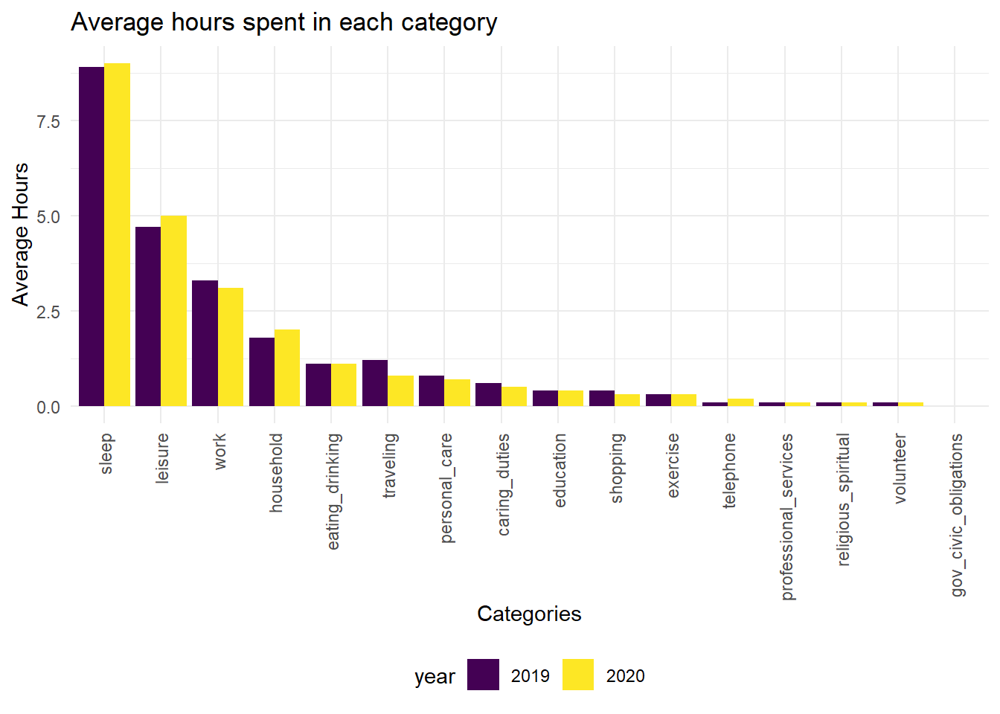
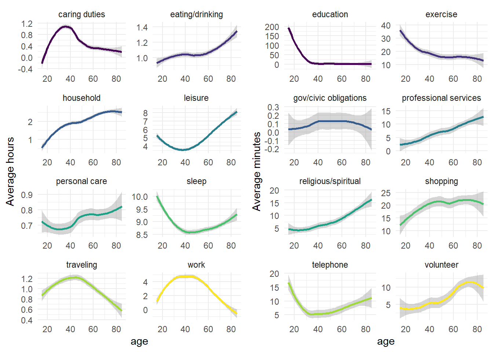
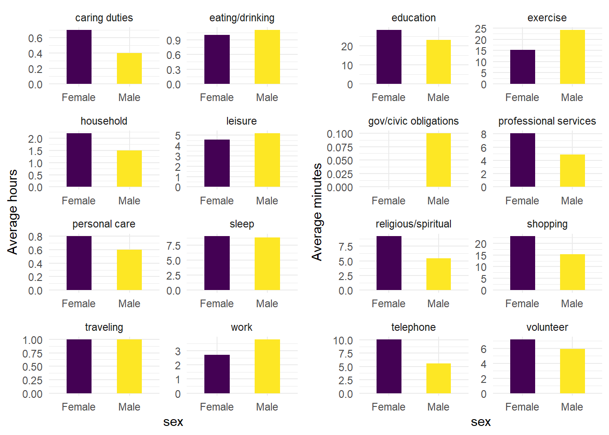
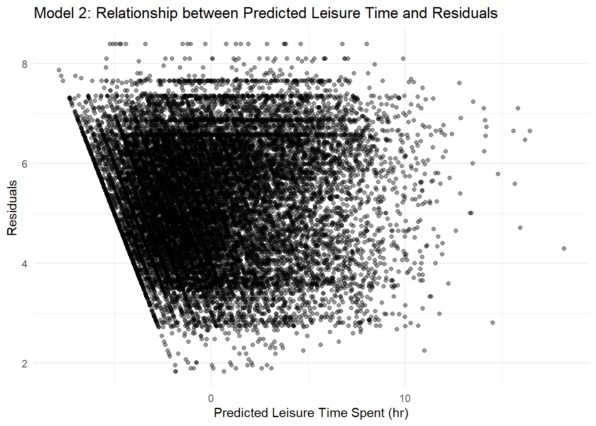

Project Report
Dee Wang (dtw2127), Sandya Ganesh (sg3891), Shaina Mackin (smm2350), Xin Fang (xf2226)
Project Motivation
COVID-19 has drastically impacted the ways in which we spend our time. During the height of the pandemic, stay-at-home orders, lockdown measures, and social distancing norms prevented many Americans from going into workplaces and schools and from seeing friends and family, impacting the way we spend our days – and making us hyper aware of it. The motivation for this project was originally to understand how COVID-19 affected time use. We set out to look at how time spent on activities such as paid and unpaid work, education, sleep, and leisure may have changed from pre- to post- pandemic. We believe that this is important to investigate as the way we spend our time impacts our general well-being and constitutes a critical determinant of health, both physical and mental.Initial Questions
The initial questions we had going into this project were:
1. How does time spent on various activities differ pre- and post-onset of the COVID-19 pandemic (2019 vs 2020)?
2. How do sociodemographic factors such as age, gender, and occupation affect time spent on leisure activities and time spent with others?
3. How do time use trends differ across the span of a decade?
4. How do time use trends differ by geography?
As the project evolved, so too did our initial questions:
- Namely, in relation to time spent with others listed in Question 2, we discovered that obtaining an estimate of this would require cleaning and merging two additional large, messy datasets. Instead, we decided to modify our initial question and instead use the activity codes around socializing and communicating with others to get a sense of how this had changed pre- to post-onset of the pandemic, and how this varied by age.
- As an expansion upon our initially proposed regression analyses of sociodemographic variables, it occurred to us mid-analysis to also investigate the interaction effects of these sociodemographic variables.
The Data
Source:
Data for this project comes from the U.S. Bureau of Labor Statistics’ American Time Use Survey (ATUS), publicly available here.
Key variables from the Activity Summary files included activity codes, total time spent on the activity, and demographic characteristics. We pulled dates of responses from ATUS respondent files and geographic information from Current Population Survey (CPS) files. The ATUS website also contained annual estimates of time spent on different activity categories from 2009-2019 which we were able to use for our multi-year trend plot.
Cleaning:
We started with the Activity Summary files. Our first step was to pivot from wide to long format, as the approximately 400 activity codes each had their own column. We also selected key demographic variables and renamed them to be more informative.
library(tidyverse)
library(dplyr)
library(ggplot2)
library(modelr)
library(mgcv)
library(magrittr)
library(plotly)
options(scipen = 50)
knitr::opts_chunk$set(echo = TRUE)
activity_summary_2019 = read.table("data/atussum_2019.dat", header = TRUE, sep = ",")
activity_summary_2020 = read.table("data/atussum_2020.dat", header = TRUE, sep = ",")
activity_summary_2020_long =
pivot_longer(data = activity_summary_2020,
cols = t010101:t500107,
names_to = "activity_codes",
values_to = "total_minutes") %>%
select(TUCASEID, TU20FWGT, PTDTRACE, TEAGE, TELFS, TESEX, activity_codes, total_minutes) %>% #selected mostly demographic variables
mutate(year = 2020) %>%
rename(weight = TU20FWGT,
race = PTDTRACE,
labor_force_status = TELFS,
age = TEAGE,
sex = TESEX)
activity_summary_2019_long =
pivot_longer(data = activity_summary_2019,
cols = t010101:t500107,
names_to = "activity_codes",
values_to = "total_minutes") %>%
select(TUCASEID, TUFINLWGT, PTDTRACE, TEAGE, TELFS, TESEX, activity_codes, total_minutes) %>% #selected mostly demographic variables
mutate(year = 2019) %>%
rename(weight = TUFINLWGT,
race = PTDTRACE,
labor_force_status = TELFS,
age = TEAGE,
sex = TESEX)We bound the 2019 and 2020 data sets. The activity codes (the letter “t” followed by 6 digits) were not very informative, so we also recoded them to be more informative of the activity (ex. t010101 was recoded as “Sleeping”).
actsum_combined = rbind(activity_summary_2019_long, activity_summary_2020_long) %>%
mutate(activity_codes = recode(activity_codes,
t010101 = "Sleeping",
t010102 = "Sleeplessness",
t090301 = "Using pet services",
t010201 = "Washing, dressing and grooming oneself",
t010299 = "Grooming, n.e.c.*",
t010301 = "Health-related self care",
t010399 = "Self care, n.e.c.*",
t010401 = "Personal/Private activities",
t010499 = "Personal activities, n.e.c.*",
t010501 = "Personal emergencies",
t019999 = "Personal care, n.e.c.*",
t020101 = "Interior cleaning",
t020102 = "Laundry",
t020103 = "Sewing, repairing, and maintaining textiles",
t020104 = "Storing interior hh items, inc. food",
t020199 = "Housework, n.e.c.*",
t020201 = "Food and drink preparation",
t020202 = "Food presentation",
t020203 = "Kitchen and food clean-up",
t020299 = "Food and drink prep, presentation, and clean-up, n.e.c.*",
t020301 = "Interior arrangement, decoration, and repairs",
t020302 = "Building and repairing furniture",
t020303 = "Heating and cooling",
t020399 = "Interior maintenance, repair, and decoration, n.e.c.*",
t020401 = "Exterior cleaning",
t020402 = "Exterior repair, improvements, and decoration",
t020499 = "Exterior maintenance, repair and decoration, n.e.c.*",
t020501 = "Lawn, garden, and houseplant care",
t020502 = "Ponds, pools, and hot tubs",
t020599 = "Lawn and garden, n.e.c.*",
t020601 = "Care for animals and pets (not veterinary care)",
t020602 = "Walking / exercising / playing with animals",
t020699 = "Pet and animal care, n.e.c.*",
t020701 = "Vehicle repair and maintenance (by self)",
t020799 = "Vehicles, n.e.c.*",
t020801 = "Appliance, tool, and toy set-up, repair, and maintenance (by self)",
t020899 = "Appliances and tools, n.e.c.*",
t020901 = "Financial management",
t020902 = "Household and personal organization and planning",
t020903 = "HH and personal mail and messages (except e-mail)",
t020904 = "HH and personal e-mail and messages",
t020905 = "Home security",
t020999 = "Household management, n.e.c.*",
t029999 = "Household activities, n.e.c.*",
t030101 = "Physical care for hh children",
t030102 = "Reading to/with hh children",
t030103 = "Playing with hh children, not sports",
t030104 = "Arts and crafts with hh children",
t030105 = "Playing sports with hh children",
t030106 = "Talking with/listening to hh children",
t030108 = "Organization and planning for hh children",
t030109 = "Looking after hh children (as a primary activity)",
t030110 = "Attending hh children's events",
t030111 = "Waiting for/with hh children",
t030112 = "Picking up/dropping off hh children",
t030199 = "Caring for and helping hh children, n.e.c.*",
t030201 = "Homework (hh children)",
t030202 = "Meetings and school conferences (hh children)",
t030203 = "Home schooling of hh children",
t030204 = "Waiting associated with hh children's education",
t030299 = "Activities related to hh child's education, n.e.c.*",
t030301 = "Providing medical care to hh children",
t030302 = "Obtaining medical care for hh children",
t030303 = "Waiting associated with hh children's health",
t030399 = "Activities related to hh child's health, n.e.c.*",
t030401 = "Physical care for hh adults",
t030402 = "Looking after hh adult (as a primary activity)",
t030403 = "Providing medical care to hh adult",
t030404 = "Obtaining medical and care services for hh adult",
t030405 = "Waiting associated with caring for household adults",
t030499 = "Caring for household adults, n.e.c.*",
t030501 = "Helping hh adults",
t030502 = "Organization and planning for hh adults",
t030503 = "Picking up/dropping off hh adult",
t030504 = "Waiting associated with helping hh adults",
t030599 = "Helping household adults, n.e.c.*",
t040101 = "Physical care for nonhh children",
t040102 = "Reading to/with nonhh children",
t040103 = "Playing with nonhh children, not sports",
t040104 = "Arts and crafts with nonhh children",
t040105 = "Playing sports with nonhh children",
t040106 = "Talking with/listening to nonhh children",
t040108 = "Organization and planning for nonhh children",
t040109 = "Looking after nonhh children (as primary activity)",
t040110 = "Attending nonhh children's events",
t040111 = "Waiting for/with nonhh children",
t040112 = "Dropping off/picking up nonhh children",
t040199 = "Caring for and helping nonhh children, n.e.c.*",
t040201 = "Homework (nonhh children)",
t040202 = "Meetings and school conferences (nonhh children)",
t040301 = "Providing medical care to nonhh children",
t040302 = "Obtaining medical care for nonhh children",
t040399 = "Activities related to nonhh child's health, n.e.c.*",
t040401 = "Physical care for nonhh adults",
t040402 = "Looking after nonhh adult (as a primary activity)",
t040403 = "Providing medical care to nonhh adult",
t040404 = "Obtaining medical and care services for nonhh adult",
t040405 = "Waiting associated with caring for nonhh adults",
t040499 = "Caring for nonhh adults, n.e.c.*",
t040501 = "Housework, cooking, and shopping assistance for nonhh adults",
t040502 = "House and lawn maintenance and repair assistance for nonhh adults",
t040503 = "Animal and pet care assistance for nonhh adults",
t040504 = "Vehicle and appliance maintenance/repair assistance for nonhh adults",
t040505 = "Financial management assistance for nonhh adults",
t040506 = "Household management and paperwork assistance for nonhh adults",
t040507 = "Picking up/dropping off nonhh adult",
t040508 = "Waiting associated with helping nonhh adults",
t040599 = "Helping nonhh adults, n.e.c.*",
t049999 = "Caring for and helping nonhh members, n.e.c.*",
t050101 = "Work, main job",
t050102 = "Work, other job(s)",
t050103 = "Security procedures related to work",
t050104 = "Waiting associated with working",
t050199 = "Working, n.e.c.*",
t050202 = "Eating and drinking as part of job",
t050205 = "Waiting associated with work-related activities",
t050299 = "Work-related activities, n.e.c.*",
t050301 = "Income-generating hobbies, crafts, and food",
t050302 = "Income-generating performances",
t050303 = "Income-generating services",
t050304 = "Income-generating rental property activities",
t050399 = "Other income-generating activities, n.e.c.*",
t050401 = "Job search activities",
t050403 = "Job interviewing",
t050404 = "Waiting associated with job search or interview",
t059999 = "Work and work-related activities, n.e.c.*",
t060101 = "Taking class for degree, certification, or licensure",
t060102 = "Taking class for personal interest",
t060103 = "Waiting associated with taking classes",
t060199 = "Taking class, n.e.c.*",
t060201 = "Extracurricular club activities",
t060202 = "Extracurricular music and performance activities",
t060204 = "Waiting associated with extracurricular activities",
t060301 = "Research/homework for class for degree, certification, or licensure",
t060302 = "Research/homework for class for pers. interest",
t060399 = "Research/homework n.e.c.*",
t060401 = "Administrative activities: class for degree, certification, or licensure",
t060402 = "Administrative activities: class for personal interest",
t060499 = "Administrative for education, n.e.c.*",
t069999 = "Education, n.e.c.*",
t070101 = "Grocery shopping",
t070102 = "Purchasing gas",
t070103 = "Purchasing food (not groceries)",
t070104 = "Shopping, except groceries, food and gas",
t070105 = "Waiting associated with shopping",
t070199 = "Shopping, n.e.c.*",
t070201 = "Comparison shopping",
t070301 = "Security procedures rel. to consumer purchases",
t080101 = "Using paid childcare services",
t080201 = "Banking",
t080202 = "Using other financial services",
t080203 = "Waiting associated w/banking/financial services",
t080301 = "Using legal services",
t080399 = "Using legal services, n.e.c.*",
t080401 = "Using health and care services outside the home",
t080402 = "Using in-home health and care services",
t080403 = "Waiting associated with medical services",
t080501 = "Using personal care services",
t080502 = "Waiting associated w/personal care services",
t080601 = "Activities rel. to purchasing/selling real estate",
t080701 = "Using veterinary services",
t080702 = "Waiting associated with veterinary services",
t089999 = "Professional and personal services, n.e.c.*",
t090101 = "Using interior cleaning services",
t090103 = "Using clothing repair and cleaning services",
t090104 = "Waiting associated with using household services",
t090199 = "Using household services, n.e.c.*",
t090201 = "Using home maint/repair/d�cor/construction svcs",
t090202 = "Waiting associated w/ home main/repair/d�cor/constr",
t090299 = "Using home maint/repair/d�cor/constr services, n.e.c.*",
t090302 = "Waiting associated with pet services",
t090399 = "Using pet services, n.e.c.*",
t090401 = "Using lawn and garden services",
t090402 = "Waiting associated with using lawn and garden services",
t090501 = "Using vehicle maintenance or repair services",
t090502 = "Waiting associated with vehicle main. or repair svcs",
t090599 = "Using vehicle maint. and repair svcs, n.e.c.*",
t099999 = "Using household services, n.e.c.*",
t100101 = "Using police and fire services",
t100102 = "Using social services",
t100103 = "Obtaining licenses and paying fines, fees, taxes",
t100199 = "Using government services, n.e.c.*",
t100201 = "Civic obligations and participation",
t100299 = "Civic obligations and participation, n.e.c.*",
t100304 = "Waiting associated with using government services",
t110101 = "Eating and drinking",
t110201 = "Waiting associated w/eating and drinking",
t120101 = "Socializing and communicating with others",
t120201 = "Attending or hosting parties/receptions/ceremonies",
t120202 = "Attending meetings for personal interest (not volunteering)",
t120299 = "Attending/hosting social events, n.e.c.*",
t120301 = "Relaxing, thinking",
t120302 = "Tobacco and drug use",
t120303 = "Television and movies (not religious)",
t120304 = "Television (religious)",
t120305 = "Listening to the radio",
t120306 = "Listening to/playing music (not radio)",
t120307 = "Playing games",
t120308 = "Computer use for leisure (exc. Games)",
t120309 = "Arts and crafts as a hobby",
t120310 = "Collecting as a hobby",
t120311 = "Hobbies, except arts and crafts and collecting",
t120312 = "Reading for personal interest",
t120313 = "Writing for personal interest",
t120399 = "Relaxing and leisure, n.e.c.*",
t120401 = "Attending performing arts",
t120402 = "Attending museums",
t120403 = "Attending movies/film",
t120404 = "Attending gambling establishments",
t120405 = "Security procedures rel. to arts and entertainment",
t120499 = "Arts and entertainment, n.e.c.*",
t120501 = "Waiting assoc. w/socializing and communicating",
t120502 = "Waiting assoc. w/attending/hosting social events",
t120503 = "Waiting associated with relaxing/leisure",
t120504 = "Waiting associated with arts and entertainment",
t129999 = "Socializing, relaxing, and leisure, n.e.c.*",
t130101 = "Doing aerobics",
t130102 = "Playing baseball",
t130103 = "Playing basketball",
t130104 = "Biking",
t130105 = "Playing billiards",
t130106 = "Boating",
t130107 = "Bowling",
t130108 = "Climbing, spelunking, caving",
t130109 = "Dancing",
t130110 = "Participating in equestrian sports",
t130112 = "Fishing",
t130113 = "Playing football",
t130114 = "Golfing",
t130116 = "Hiking",
t130117 = "Playing hockey",
t130118 = "Hunting",
t130119 = "Participating in martial arts",
t130120 = "Playing racquet sports",
t130122 = "Rollerblading",
t130124 = "Running",
t130125 = "Skiing, ice skating, snowboarding",
t130126 = "Playing soccer",
t130127 = "Softball",
t130128 = "Using cardiovascular equipment",
t130129 = "Vehicle touring/racing",
t130130 = "Playing volleyball",
t130131 = "Walking",
t130132 = "Participating in water sports",
t130133 = "Weightlifting/strength training",
t130134 = "Working out, unspecified",
t130136 = "Doing yoga",
t130199 = "Playing sports n.e.c.*",
t130202 = "Watching baseball",
t130203 = "Watching basketball",
t130207 = "Watching bowling",
t130209 = "Watching dancing",
t130210 = "Watching equestrian sports",
t130213 = "Watching football",
t130214 = "Watching golfing",
t130216 = "Watching hockey",
t130218 = "Watching racquet sports",
t130219 = "Watching rodeo competitions",
t130222 = "Watching running",
t130224 = "Watching soccer",
t130225 = "Watching softball",
t130226 = "Watching vehicle touring/racing",
t130227 = "Watching volleyball",
t130232 = "Watching wrestling",
t130299 = "Attending sporting events, n.e.c.*",
t130301 = "Waiting related to playing sports or exercising",
t130302 = "Waiting related to attending sporting events",
t130399 = "Waiting associated with sports, exercise, and recreation, n.e.c.*",
t130402 = "Security related to attending sporting events",
t139999 = "Sports, exercise, and recreation, n.e.c.*",
t140101 = "Attending religious services",
t140102 = "Participation in religious practices",
t140103 = "Waiting associated w/religious and spiritual activities",
t140105 = "Religious education activities",
t149999 = "Religious and spiritual activities, n.e.c.*",
t150101 = "Computer use",
t150102 = "Organizing and preparing",
t150103 = "Reading",
t150104 = "Telephone calls (except hotline counseling)",
t150105 = "Writing",
t150106 = "Fundraising",
t150199 = "Administrative and support activities, n.e.c.*",
t150201 = "Food preparation, presentation, clean-up",
t150202 = "Collecting and delivering clothing and other goods",
t150203 = "Providing care",
t150204 = "Teaching, leading, counseling, mentoring",
t150299 = "Social service and care activities, n.e.c.*",
t150301 = "Building houses, wildlife sites, and other structures",
t150302 = "Indoor and outdoor maintenance, repair, and clean-up",
t150399 = "Indoor and outdoor maintenance, building and clean-up activities, n.e.c.*",
t150401 = "Performing",
t150402 = "Serving at volunteer events and cultural activities",
t150499 = "Participating in performance and cultural activities, n.e.c.*",
t150501 = "Attending meetings, conferences, and training",
t150602 = "Public safety activities",
t150699 = "Public health and safety activities, n.e.c.*",
t150701 = "Waiting associated with volunteer activities",
t150799 = "Waiting associated with volunteer activities, n.e.c.*",
t150801 = "Security procedures related to volunteer activities",
t150899 = "Security procedures related to volunteer activities, n.e.c.*",
t159999 = "Volunteer activities, n.e.c.*",
t160101 = "Telephone calls to/from family members",
t160102 = "Telephone calls to/from friends, neighbors, or acquaintances",
t160103 = "Telephone calls to/from education services providers",
t160104 = "Telephone calls to/from salespeople",
t160105 = "Telephone calls to/from professional or personal care svcs providers",
t160106 = "Telephone calls to/from household services providers",
t160107 = "Telephone calls to/from paid child or adult care providers",
t160108 = "Telephone calls to/from government officials",
t160199 = "Telephone calls (to or from), n.e.c.*",
t160201 = "Waiting associated with telephone calls",
t169999 = "Telephone calls, n.e.c.*",
t180101 = "Travel related to personal care",
t180201 = "Travel related to housework",
t180202 = "Travel related to food and drink prep., clean-up, and presentation",
t180203 = "Travel related to interior maintenance, repair, and decoration",
t180204 = "Travel related to exterior maintenance, repair, and decoration",
t180205 = "Travel related to lawn, garden, and houseplant care",
t180206 = "Travel related to care for animals and pets (not vet care)",
t180207 = "Travel related to vehicle care and maintenance (by self)",
t180208 = "Travel related to appliance, tool, and toy set-up, repair, and maintenance (by self)",
t180209 = "Travel related to household management",
t180299 = "Travel related to household activities, n.e.c.*",
t180301 = "Travel related to caring for and helping hh children",
t180302 = "Travel related to hh children's education",
t180303 = "Travel related to hh children's health",
t180304 = "Travel related to caring for hh adults",
t180305 = "Travel related to helping hh adults",
t180401 = "Travel related to caring for and helping nonhh children",
t180402 = "Travel related to nonhh children's education",
t180403 = "Travel related to nonhh children's health",
t180404 = "Travel related to caring for nonhh adults",
t180405 = "Travel related to helping nonhh adults",
t180499 = "Travel rel. to caring for and helping nonhh members, n.e.c.*",
t180501 = "Travel related to working",
t180502 = "Travel related to work-related activities",
t180503 = "Travel related to income-generating activities",
t180504 = "Travel related to job search and interviewing",
t180599 = "Travel related to work, n.e.c.*",
t180601 = "Travel related to taking class",
t180602 = "Travel related to extracurricular activities (ex. Sports)",
t180603 = "Travel related to research/homework",
t180604 = "Travel related to registration/administrative activities",
t180699 = "Travel related to education, n.e.c.*",
t180701 = "Travel related to grocery shopping",
t180702 = "Travel related to purchasing gas",
t180703 = "Travel related to purchasing food (not groceries)",
t180704 = "Travel related to shopping, ex groceries, food, and gas",
t180799 = "Travel related to consumer purchases, n.e.c.*",
t180801 = "Travel related to using childcare services",
t180802 = "Travel related to using financial services and banking",
t180803 = "Travel related to using legal services",
t180804 = "Travel related to using medical services",
t180805 = "Travel related to using personal care services",
t180806 = "Travel related to using real estate services",
t180807 = "Travel related to using veterinary services",
t180899 = "Travel rel. to using prof. and personal care services, n.e.c.*",
t180901 = "Travel related to using household services",
t180902 = "Travel related to using home main./repair/d�cor./construction svcs",
t180903 = "Travel related to using pet services (not vet)",
t180905 = "Travel related to using vehicle maintenance and repair services",
t181001 = "Travel related to using government services",
t181002 = "Travel related to civic obligations and participation",
t181101 = "Travel related to eating and drinking",
t181201 = "Travel related to socializing and communicating",
t181202 = "Travel related to attending or hosting social events",
t181203 = "Travel related to relaxing and leisure",
t181204 = "Travel related to arts and entertainment",
t181205 = "Travel as a form of entertainment",
t181299 = "Travel rel. to socializing, relaxing, and leisure, n.e.c.*",
t181301 = "Travel related to participating in sports/exercise/recreation",
t181302 = "Travel related to attending sporting/recreational events",
t181399 = "Travel related to sports, exercise, and recreation, n.e.c.*",
t181401 = "Travel related to religious/spiritual practices",
t181499 = "Travel rel. to religious/spiritual activities, n.e.c.*",
t181501 = "Travel related to volunteering",
t181599 = "Travel related to volunteer activities, n.e.c.*",
t181601 = "Travel related to phone calls",
t181801 = "Security procedures related to traveling",
t181899 = "Security procedures related to traveling, n.e.c.*",
t189999 = "Traveling, n.e.c.*",
t500101 = "Insufficient detail in verbatim",
t500103 = "Missing travel or destination",
t500105 = "Respondent refused to provide information/'none of your business'",
t500106 = "Gap/can't remember",
t500107 = "Unable to code activity at 1st tier",
t040203 = "Home schooling of nonhh children",
t050201 = "Socializing, relaxing, and leisure as part of job", t050203 = "Sports and exercise as part of job",
t050305 = "Waiting associated with other income-generating activities",
t050499 = "Job search and Interviewing, n.e.c.*",
t060203 = "Extracurricular student government activities",
t060299 = "Education-related extracurricular activities, n.e.c.*",
t060303 = "Waiting associated with research/homework",
t080299 = "Using financial services and banking, n.e.c.*",
t080499 = "Using medical services, n.e.c.*",
t080599 = "Using personal care services, n.e.c.*",
t080602 = "Waiting associated w/purchasing/selling real estate",
t080801 = "Security procedures rel. to professional/personal svcs.",
t100305 = "Waiting associated with civic obligations and participation",
t120199 = "Socializing and communicating, n.e.c.*",
t130211 = "Watching fencing",
t130212 = "Watching fishing",
t130220 = "Watching rollerblading",
t130229 = "Watching water sports",
t150599 = "Attending meetings, conferences, and training, n.e.c.*",
t150601 = "Public health activities",
t180399 = "Travel rel. to caring for and helping hh members, n.e.c.*",
t039999 = "Caring for and helping hh members, n.e.c.*"
)
)We categorized activity codes into 16 different categories (caring for and helping others, consumer purchases, eating and drinking, education, government services and civic obligations, household activities, household services, personal care, professional and personal care services, religious and spiritual, leisure, sports/exercise, telephone calls, traveling, volunteering and working) using the category definitions provided by ATUS. It is important to note that some activities could be considered to fall under more than one category (i.e., some may consider sports to fall under leisure while others may consider it to fall under exercise or even both). In our case, we used the definitions provided by ATUS to categorize each activity under one category.
We categorized activity codes into 16 different categories (caring for and helping others, consumer purchases, eating and drinking, education, government services and civic obligations, household activities, household services, personal care, professional and personal care services, religious and spiritual, leisure, sports/exercise, telephone calls, traveling, volunteering and working) using the category definitions provided by ATUS. It is important to note that activity categorization is subjective (i.e., some may consider sports to fall under leisure while others may consider it to fall under exercise), but for the purposes of this analysis we adhered to the operational definitions provided by ATUS.
actsum_combined_categorized = actsum_combined %>%
mutate(category = case_when(
activity_codes %in% c("Sleeping",
"Sleeplessness") ~ "sleep",
activity_codes %in% c("Using pet services",
"Washing, dressing and grooming oneself",
"Grooming, n.e.c.*",
"Health-related self care",
"Self care, n.e.c.*",
"Personal/Private activities",
"Personal activities, n.e.c.*",
"Personal emergencies",
"Personal care, n.e.c.*",
"Public health activities" #unsure
) ~ "personal_care",
activity_codes %in% c("Interior cleaning",
"Laundry",
"Sewing, repairing, and maintaining textiles",
"Storing interior hh items, inc. food",
"Housework, n.e.c.*",
"Food and drink preparation",
"Food presentation",
"Kitchen and food clean-up",
"Food and drink prep, presentation, and clean-up, n.e.c.*",
"Interior arrangement, decoration, and repairs",
"Building and repairing furniture",
"Heating and cooling",
"Interior maintenance, repair, and decoration, n.e.c.*",
"Exterior cleaning",
"Exterior repair, improvements, and decoration",
"Exterior maintenance, repair and decoration, n.e.c.*",
"Lawn, garden, and houseplant care",
"Ponds, pools, and hot tubs",
"Lawn and garden, n.e.c.*",
"Care for animals and pets (not veterinary care)",
"Walking / exercising / playing with animals",
"Pet and animal care, n.e.c.*",
"Vehicle repair and maintenance (by self)",
"Vehicles, n.e.c.*",
"Appliance, tool, and toy set-up, repair, and maintenance (by self)",
"Appliances and tools, n.e.c.*",
"Financial management",
"Household and personal organization and planning",
"HH and personal mail and messages (except e-mail)",
"HH and personal e-mail and messages",
"Home security",
"Household management, n.e.c.*",
"Household activities, n.e.c.*") ~ "household",
activity_codes %in% c("Physical care for hh children",
"Reading to/with hh children",
"Playing with hh children, not sports",
"Arts and crafts with hh children",
"Playing sports with hh children",
"Talking with/listening to hh children",
"Organization and planning for hh children",
"Looking after hh children (as a primary activity)",
"Attending hh children's events",
"Waiting for/with hh children",
"Picking up/dropping off hh children",
"Caring for and helping hh children, n.e.c.*",
"Homework (hh children)",
"Meetings and school conferences (hh children)",
"Home schooling of hh children",
"Waiting associated with hh children's education",
"Activities related to hh child's education, n.e.c.*",
"Providing medical care to hh children",
"Obtaining medical care for hh children",
"Waiting associated with hh children's health",
"Activities related to hh child's health, n.e.c.*",
"Physical care for hh adults",
"Looking after hh adult (as a primary activity)",
"Providing medical care to hh adult",
"Obtaining medical and care services for hh adult",
"Waiting associated with caring for household adults",
"Caring for household adults, n.e.c.*",
"Helping hh adults",
"Organization and planning for hh adults",
"Picking up/dropping off hh adult",
"Waiting associated with helping hh adults",
"Helping household adults, n.e.c.*",
"Physical care for nonhh children",
"Reading to/with nonhh children",
"Playing with nonhh children, not sports",
"Arts and crafts with nonhh children",
"Playing sports with nonhh children",
"Talking with/listening to nonhh children",
"Organization and planning for nonhh children",
"Looking after nonhh children (as primary activity)",
"Attending nonhh children's events",
"Waiting for/with nonhh children",
"Dropping off/picking up nonhh children",
"Caring for and helping nonhh children, n.e.c.*",
"Homework (nonhh children)",
"Meetings and school conferences (nonhh children)",
"Providing medical care to nonhh children",
"Obtaining medical care for nonhh children",
"Activities related to nonhh child's health, n.e.c.*",
"Physical care for nonhh adults",
"Looking after nonhh adult (as a primary activity)",
"Providing medical care to nonhh adult",
"Obtaining medical and care services for nonhh adult",
"Waiting associated with caring for nonhh adults",
"Caring for nonhh adults, n.e.c.*",
"Housework, cooking, and shopping assistance for nonhh adults",
"House and lawn maintenance and repair assistance for nonhh adults",
"Animal and pet care assistance for nonhh adults",
"Vehicle and appliance maintenance/repair assistance for nonhh adults",
"Financial management assistance for nonhh adults",
"Household management and paperwork assistance for nonhh adults",
"Picking up/dropping off nonhh adult",
"Waiting associated with helping nonhh adults",
"Helping nonhh adults, n.e.c.*",
"Caring for and helping nonhh members, n.e.c.*",
"Home schooling of nonhh children",
"Caring for and helping hh members, n.e.c.*") ~ "caring_duties",
activity_codes %in% c("Work, main job",
"Work, other job(s)",
"Security procedures related to work",
"Waiting associated with working",
"Working, n.e.c.*",
"Eating and drinking as part of job",
"Waiting associated with work-related activities",
"Work-related activities, n.e.c.*",
"Income-generating hobbies, crafts, and food",
"Income-generating performances",
"Income-generating services",
"Income-generating rental property activities",
"Other income-generating activities, n.e.c.*",
"Job search activities",
"Job interviewing",
"Waiting associated with job search or interview",
"Work and work-related activities, n.e.c.*",
"Socializing, relaxing, and leisure as part of job",
"Sports and exercise as part of job",
"Waiting associated with other income-generating activities",
"Job search and Interviewing, n.e.c.*",
"Attending meetings, conferences, and training, n.e.c.*") ~ "work",
activity_codes %in% c("Taking class for degree, certification, or licensure",
"Taking class for personal interest",
"Waiting associated with taking classes",
"Taking class, n.e.c.*",
"Extracurricular club activities",
"Extracurricular music and performance activities",
"Waiting associated with extracurricular activities",
"Research/homework for class for degree, certification, or licensure",
"Research/homework for class for pers. interest",
"Research/homework n.e.c.*",
"Administrative activities: class for degree, certification, or licensure",
"Administrative activities: class for personal interest",
"Administrative for education, n.e.c.*",
"Education, n.e.c.*",
"Extracurricular student government activities",
"Education-related extracurricular activities, n.e.c.*",
"Waiting associated with research/homework") ~ "education",
activity_codes %in% c("Grocery shopping",
"Purchasing gas",
"Purchasing food (not groceries)",
"Shopping, except groceries, food and gas",
"Waiting associated with shopping",
"Shopping, n.e.c.*",
"Comparison shopping") ~ "shopping",
activity_codes %in% c("Security procedures rel. to consumer purchases",
"Using paid childcare services",
"Banking",
"Using other financial services",
"Waiting associated w/banking/financial services",
"Using legal services",
"Using legal services, n.e.c.*",
"Using health and care services outside the home",
"Using in-home health and care services",
"Waiting associated with medical services",
"Using personal care services",
"Waiting associated w/personal care services",
"Activities rel. to purchasing/selling real estate",
"Using veterinary services",
"Waiting associated with veterinary services",
"Professional and personal services, n.e.c.*",
"Using interior cleaning services",
"Using clothing repair and cleaning services",
"Waiting associated with using household services",
"Using household services, n.e.c.*",
"Using home maint/repair/d�cor/construction svcs",
"Waiting associated w/ home main/repair/d�cor/constr",
"Using home maint/repair/d�cor/constr services, n.e.c.*",
"Waiting associated with pet services",
"Using pet services, n.e.c.*",
"Using lawn and garden services",
"Waiting associated with using lawn and garden services",
"Using vehicle maintenance or repair services",
"Waiting associated with vehicle main. or repair svcs",
"Using vehicle maint. and repair svcs, n.e.c.*",
"Using household services, n.e.c.*",
"Using police and fire services",
"Using social services",
"Obtaining licenses and paying fines, fees, taxes",
"Using financial services and banking, n.e.c.*",
"Using medical services, n.e.c.*",
"Using personal care services, n.e.c.*",
"Waiting associated w/purchasing/selling real estate",
"Security procedures rel. to professional/personal svcs.") ~ "professional_services",
activity_codes %in% c("Using government services, n.e.c.*",
"Civic obligations and participation",
"Civic obligations and participation, n.e.c.*",
"Waiting associated with using government services",
"Waiting associated with civic obligations and participation") ~ "gov_civic_obligations",
activity_codes %in% c("Eating and drinking",
"Waiting associated w/eating and drinking") ~ "eating_drinking",
activity_codes %in% c("Socializing and communicating with others",
"Attending or hosting parties/receptions/ceremonies",
"Attending meetings for personal interest (not volunteering)",
"Attending/hosting social events, n.e.c.*",
"Relaxing, thinking",
"Tobacco and drug use",
"Television and movies (not religious)",
"Television (religious)",
"Listening to the radio",
"Listening to/playing music (not radio)",
"Playing games",
"Computer use for leisure (exc. Games)",
"Arts and crafts as a hobby",
"Collecting as a hobby",
"Hobbies, except arts and crafts and collecting",
"Reading for personal interest",
"Writing for personal interest",
"Relaxing and leisure, n.e.c.*",
"Attending performing arts",
"Attending museums",
"Attending movies/film",
"Attending gambling establishments",
"Security procedures rel. to arts and entertainment",
"Arts and entertainment, n.e.c.*",
"Watching baseball",
"Watching basketball",
"Watching bowling",
"Watching dancing",
"Watching equestrian sports",
"Watching football",
"Watching golfing",
"Watching hockey",
"Watching racquet sports",
"Watching rodeo competitions",
"Watching running",
"Watching soccer",
"Watching softball",
"Watching vehicle touring/racing",
"Watching volleyball",
"Watching wrestling",
"Attending sporting events, n.e.c.*",
"Waiting assoc. w/socializing and communicating",
"Waiting assoc. w/attending/hosting social events",
"Waiting associated with relaxing/leisure",
"Waiting associated with arts and entertainment",
"Socializing, relaxing, and leisure, n.e.c.*",
"Socializing and communicating, n.e.c.*",
"Watching fencing",
"Watching fishing",
"Watching rollerblading",
"Watching water sports") ~ "leisure",
activity_codes %in% c("Doing aerobics",
"Playing baseball",
"Playing basketball",
"Biking",
"Playing billiards",
"Boating",
"Bowling",
"Climbing, spelunking, caving",
"Dancing",
"Participating in equestrian sports",
"Fishing",
"Playing football",
"Golfing",
"Hiking",
"Playing hockey",
"Hunting",
"Participating in martial arts",
"Playing racquet sports",
"Rollerblading",
"Running",
"Skiing, ice skating, snowboarding",
"Playing soccer",
"Softball",
"Using cardiovascular equipment",
"Vehicle touring/racing",
"Playing volleyball",
"Walking",
"Participating in water sports",
"Weightlifting/strength training",
"Working out, unspecified",
"Doing yoga",
"Playing sports n.e.c.*",
"Waiting related to playing sports or exercising",
"Waiting related to attending sporting events",
"Waiting associated with sports, exercise, and recreation, n.e.c.*",
"Security related to attending sporting events",
"Sports, exercise, and recreation, n.e.c.*") ~ "exercise",
activity_codes %in% c("Attending religious services",
"Participation in religious practices",
"Waiting associated w/religious and spiritual activities",
"Religious education activities",
"Religious and spiritual activities, n.e.c.*") ~ "religious_spiritual",
activity_codes %in% c("Computer use",
"Organizing and preparing",
"Reading",
"Telephone calls (except hotline counseling)",
"Writing",
"Fundraising",
"Administrative and support activities, n.e.c.*",
"Food preparation, presentation, clean-up",
"Collecting and delivering clothing and other goods",
"Providing care",
"Teaching, leading, counseling, mentoring",
"Social service and care activities, n.e.c.*",
"Building houses, wildlife sites, and other structures",
"Indoor and outdoor maintenance, repair, and clean-up",
"Indoor and outdoor maintenance, building and clean-up activities, n.e.c.*",
"Performing",
"Serving at volunteer events and cultural activities",
"Participating in performance and cultural activities, n.e.c.*",
"Attending meetings, conferences, and training",
"Public safety activities",
"Public health and safety activities, n.e.c.*",
"Waiting associated with volunteer activities",
"Waiting associated with volunteer activities, n.e.c.*",
"Security procedures related to volunteer activities",
"Security procedures related to volunteer activities, n.e.c.*",
"Volunteer activities, n.e.c.*") ~ "volunteer",
activity_codes %in% c("Telephone calls to/from family members",
"Telephone calls to/from friends, neighbors, or acquaintances",
"Telephone calls to/from education services providers",
"Telephone calls to/from salespeople",
"Telephone calls to/from professional or personal care svcs providers",
"Telephone calls to/from household services providers",
"Telephone calls to/from paid child or adult care providers",
"Telephone calls to/from government officials",
"Telephone calls (to or from), n.e.c.*",
"Waiting associated with telephone calls",
"Telephone calls, n.e.c.*") ~ "telephone",
activity_codes %in% c("Travel related to personal care",
"Travel related to housework",
"Travel related to food and drink prep., clean-up, and presentation",
"Travel related to interior maintenance, repair, and decoration",
"Travel related to exterior maintenance, repair, and decoration",
"Travel related to lawn, garden, and houseplant care",
"Travel related to care for animals and pets (not vet care)",
"Travel related to vehicle care and maintenance (by self)",
"Travel related to appliance, tool, and toy set-up, repair, and maintenance (by self)",
"Travel related to household management",
"Travel related to household activities, n.e.c.*",
"Travel related to caring for and helping hh children",
"Travel related to hh children's education",
"Travel related to hh children's health",
"Travel related to caring for hh adults",
"Travel related to helping hh adults",
"Travel related to caring for and helping nonhh children",
"Travel related to nonhh children's education",
"Travel related to nonhh children's health",
"Travel related to caring for nonhh adults",
"Travel related to helping nonhh adults",
"Travel rel. to caring for and helping nonhh members, n.e.c.*",
"Travel related to working",
"Travel related to work-related activities",
"Travel related to income-generating activities",
"Travel related to job search and interviewing",
"Travel related to work, n.e.c.*",
"Travel related to taking class",
"Travel related to extracurricular activities (ex. Sports)",
"Travel related to research/homework",
"Travel related to registration/administrative activities",
"Travel related to education, n.e.c.*",
"Travel related to grocery shopping",
"Travel related to purchasing gas",
"Travel related to purchasing food (not groceries)",
"Travel related to shopping, ex groceries, food, and gas",
"Travel related to consumer purchases, n.e.c.*",
"Travel related to using childcare services",
"Travel related to using financial services and banking",
"Travel related to using legal services",
"Travel related to using medical services",
"Travel related to using personal care services",
"Travel related to using real estate services",
"Travel related to using veterinary services",
"Travel rel. to using prof. and personal care services, n.e.c.*",
"Travel related to using household services",
"Travel related to using home main./repair/d�cor./construction svcs",
"Travel related to using pet services (not vet)",
"Travel related to using vehicle maintenance and repair services",
"Travel related to using government services",
"Travel related to civic obligations and participation",
"Travel related to eating and drinking",
"Travel related to socializing and communicating",
"Travel related to attending or hosting social events",
"Travel related to relaxing and leisure",
"Travel related to arts and entertainment",
"Travel as a form of entertainment",
"Travel rel. to socializing, relaxing, and leisure, n.e.c.*",
"Travel related to participating in sports/exercise/recreation",
"Travel related to attending sporting/recreational events",
"Travel related to sports, exercise, and recreation, n.e.c.*",
"Travel related to religious/spiritual practices",
"Travel rel. to religious/spiritual activities, n.e.c.*",
"Travel related to volunteering",
"Travel related to volunteer activities, n.e.c.*",
"Travel related to phone calls",
"Security procedures related to traveling",
"Security procedures related to traveling, n.e.c.*",
"Traveling, n.e.c.*",
"Travel rel. to caring for and helping hh members, n.e.c.*") ~ "traveling"
))We then cleaned the CPS datasets that contained geographic and demographic information. We selected variables of interest and then renamed them to be more useful, and also recoded variable values.
cps_2019 = read.table("data/atuscps_2019.dat", header = TRUE, sep = ",")
cps_2020 = read.table("data/atuscps_2020.dat", header = TRUE, sep = ",")
cps_2020_sub = cps_2020 %>% #select geographic variables
select(TUCASEID:GTCO, PRTAGE, PESEX) %>%
mutate(year = 2020)
cps_2019_sub = cps_2019 %>% #select geographic variables
select(TUCASEID:GTCO, PRTAGE, PESEX) %>%
mutate(year = 2019)
#stack the 2019 and 2020 cps datasets
cps_combined = rbind(cps_2019_sub, cps_2020_sub) %>%
rename(division = GEDIV,
region = GEREG,
state = GESTFIPS,
metro_area = GTCBSA,
metro_status = GTMETSTA,
county = GTCO,
age = PRTAGE,
sex = PESEX) %>%
filter(TULINENO == 1) %>%
mutate(state = recode(state,
`1 ` = "AL", `17`= "IL", `30` = "MT", `44` = "RI",
`2 ` = "AK", `18`= "IN", `31` = "NE", `45` = "SC",
`4 ` = "AZ", `19`= "IA", `32` = "NV", `46` = "SD",
`5 ` = "AR", `20`= "KS", `33` = "NH", `47` = "TN",
`6 ` = "CA", `21`= "KY", `34` = "NJ", `48` = "TX",
`8 ` = "CO", `22`= "LA", `35` = "NM", `49` = "UT",
`9 ` = "CT", `23`= "ME", `36` = "NY", `50` = "VT",
`10` = "DE", `24`= "MD", `37` = "NC", `51` = "VA",
`11` = "DC", `25`= "MA", `38` = "ND", `53` = "WA",
`12` = "FL", `26`= "MI", `39` = "OH", `54` = "WV",
`13` = "GA", `27`= "MN", `40` = "OK", `55` = "WI",
`15` = "HI", `28`= "MS", `41` = "OR", `56` = "WY",
`16` = "ID", `29`= "MO", `42` = "PA"),
region = recode(region,
`1` = "Northeast",
`2` = "Midwest",
`3` = "South",
`4` = "West"),
division = recode(division,
`1` = "New England",
`2` = "Middle Atlantic",
`3` = "East North Central",
`4` = "West North Central",
`5` = "South Atlantic",
`6` = "East South Central",
`7` = "West South Central",
`8` = "Mountain",
`9` = "Pacific"
),
metro_status = recode(metro_status,
`1` = "metropolitan",
`2` = "non-metropolitan",
`3` = "not identified")) We then merged the CPS files with the Activity Summary files and created a summarized data set that contained total time spent on each activity category for each respondent. Lastly, we did some final re-coding of variables including race and labor force status. Race originally had over 20 categories, so we grouped all mixed races into 1 category for ease of interpretation.We used write_csv to save a csv version of this data set(summary_household_category) which was used for our analyses.
cps_summary_merged = left_join(actsum_combined_categorized, cps_combined, by = c("TUCASEID", "age", "year", "sex"))
summary_household_category <- cps_summary_merged %>%
group_by(TUCASEID,category) %>%
mutate(category_sum_min = sum(total_minutes),
category_sum_hour = category_sum_min/60,
category_sum_hour_weight = category_sum_hour*weight) %>%
filter(row_number() == 1) %>%
select(-c("activity_codes","total_minutes"))
summary_household_category$race <-
as_factor(case_when(
summary_household_category$race %in% c(1) ~ "White",
summary_household_category$race %in% c(2) ~ "Black",
summary_household_category$race %in% c(3) ~ "American Indian",
summary_household_category$race %in% c(4) ~ "Asian",
summary_household_category$race %in% c(5) ~ "Hawaiian/Pacific Islander",
TRUE ~ "2+ races"
))
summary_household_category$labor_force_status <-
as_factor(case_when(
summary_household_category$labor_force_status == 1 ~ "Employed-At work",
summary_household_category$labor_force_status == 2 ~ "Employed-Absent",
summary_household_category$labor_force_status == 3 ~ "Unemployed-On layoff",
summary_household_category$labor_force_status == 4 ~ "Unemployed-Looking",
summary_household_category$labor_force_status == 5 ~ "Retired",
TRUE ~ "unknown"
))
summary_household_category$sex <-
as_factor(case_when(
summary_household_category$sex == 1 ~ "Male",
summary_household_category$sex == 2 ~ "Female",
TRUE ~ "unknown"
))
write_csv(summary_household_category, "summary_household_category.csv")Exploratory Analysis
COVID-19: 2019 vs 2020
To produce our summary tables and visualizations, we calculated average hours/minutes spent on activities using weights. The weights were created by ATUS to account for the fact that respondents were more likely to participate on weekends vs weekdays, and for the fact that some demographics were more represented than others (for instance, women were more likely to respond than men). To calculate average daily hours/minutes spent on an activity, we multiplied total time spent on the activity by the weight, and then summed all these products together and divided this by the sum of the weights. See the code for this calculation below.
summary_household_category %>%
drop_na() %>%
group_by(year, category) %>%
summarize(sum_product = sum(category_sum_hour_weight),
sum_weight = sum(weight)) %>%
mutate(average_hours = round(sum_product/sum_weight, 1)) ## # A tibble: 32 x 5
## # Groups: year [2]
## year category sum_product sum_weight average_hours
## <dbl> <chr> <dbl> <dbl> <dbl>
## 1 2019 caring_duties 42841745794. 77763912014. 0.6
## 2 2019 eating_drinking 82704263492. 77763912014. 1.1
## 3 2019 education 33584551555. 77763912014. 0.4
## 4 2019 exercise 24350549685. 77763912014. 0.3
## 5 2019 gov_civic_obligations 158433084. 77763912014. 0
## 6 2019 household 139323868473. 77763912014. 1.8
## 7 2019 leisure 367139602561. 77763912014. 4.7
## 8 2019 personal_care 59177648542. 77763912014. 0.8
## 9 2019 professional_services 8498122728. 77763912014. 0.1
## 10 2019 religious_spiritual 10987537121. 77763912014. 0.1
## # ... with 22 more rowsThe table below details average daily hours spent on categories of activities in 2019 versus 2020, along with the percent change.
summary_household_category %>%
drop_na() %>%
group_by(year, category) %>%
summarize(sum_product = sum(category_sum_hour_weight),
sum_weight = sum(weight)) %>%
mutate(average_hours = round(sum_product/sum_weight, 1)) %>%
subset(select = -c(sum_product,sum_weight)) %>%
pivot_wider(names_from = "year",
values_from = "average_hours") %>%
mutate(percent_change = round((`2020` - `2019`)*100/`2019`, 1)) %>%
arrange(desc(`2019`)) %>%
knitr::kable()| category | 2019 | 2020 | percent_change |
|---|---|---|---|
| sleep | 8.9 | 9.0 | 1.1 |
| leisure | 4.7 | 5.0 | 6.4 |
| work | 3.3 | 3.1 | -6.1 |
| household | 1.8 | 2.0 | 11.1 |
| traveling | 1.2 | 0.8 | -33.3 |
| eating_drinking | 1.1 | 1.1 | 0.0 |
| personal_care | 0.8 | 0.7 | -12.5 |
| caring_duties | 0.6 | 0.5 | -16.7 |
| education | 0.4 | 0.4 | 0.0 |
| shopping | 0.4 | 0.3 | -25.0 |
| exercise | 0.3 | 0.3 | 0.0 |
| professional_services | 0.1 | 0.1 | 0.0 |
| religious_spiritual | 0.1 | 0.1 | 0.0 |
| telephone | 0.1 | 0.2 | 100.0 |
| volunteer | 0.1 | 0.1 | 0.0 |
| gov_civic_obligations | 0.0 | 0.0 | NaN |
We created a number of different plots to help visualize these differences.
summary_household_category %>%
drop_na() %>%
group_by(year, category) %>%
summarize(sum_product = sum(category_sum_hour_weight),
sum_weight = sum(weight)) %>%
mutate(average_hours = round(sum_product/sum_weight, 1)) %>%
subset(select = -c(sum_product,sum_weight)) %>%
mutate(year = as.factor(year)) %>%
ggplot(aes(x = forcats::fct_reorder(category, average_hours, .desc = TRUE), y = average_hours, fill = year)) +
geom_bar(stat = "identity", position = "dodge") +
theme(axis.text.x = element_text(angle = 90, vjust = 0.5, hjust = 1)) +
labs(
y = "Average Hours",
x = "Categories",
title = "Average hours spent in each category"
)
We also examined monthly activity trends across 2020.
actsum_cps_2020 = summary_household_category %>%
filter(year == 2020)
resp_2020 = read.table("data/atusresp_2020.dat", header = TRUE, sep = ",")
resp_2020_tidied = resp_2020 %>%
dplyr::select(TUCASEID, TULINENO, TUYEAR, TUMONTH, TUDIARYDAY, TUDIARYDATE) %>%
mutate(date = lubridate::ymd(TUDIARYDATE)) %>%
separate(date, c("year", "month", "date")) %>%
mutate(month = month.name[as.numeric(month)]) %>%
mutate(year = as.numeric(year)) %>%
mutate(TUDIARYDATE = str_replace(TUDIARYDATE, "2020", "")) %>%
filter(TUYEAR == 2020) %>%
dplyr::select(-TUYEAR, -TUMONTH, -TULINENO) %>%
mutate(
tudiaryday = factor(TUDIARYDAY, levels = c(1,2,3,4,5,6,7), labels = c("sunday", "monday", "tuesday", "wednesday", "thursday", "friday", "saturday"))) %>%
arrange(TUCASEID, month, date, year, TUDIARYDATE, tudiaryday)
merged_actsum_cps_resp_2020 = left_join(actsum_cps_2020, resp_2020_tidied, by = c("TUCASEID")) %>% janitor::clean_names()
category_time_month_2020 = merged_actsum_cps_resp_2020 %>%
drop_na() %>%
filter(category %in% c("sleep", "leisure",
"work", "household",
"traveling", "eating_drinking",
"personal_care", "caring_duties")) %>%
group_by(month, category) %>%
summarize(sum_product = sum(category_sum_hour_weight),
sum_weight = sum(weight)) %>%
mutate(average_hours = round(sum_product/sum_weight, 1)) %>%
subset(select = -c(sum_product,sum_weight)) %>%
mutate(
month = as.factor(month)) %>%
mutate(month = match(month, month.name)) %>%
mutate(
category = replace(category, category == "caring_duties", "caring duties"),
category = replace(category, category == "eating_drinking", "eating/drinking"),
category = replace(category, category == "personal_care", "personal care"),
) %>%
arrange(month)
monthly_2020_plotly_hours = category_time_month_2020 %>%
mutate(text_label = str_c("Activity: ", category, "\nAverage hours: ", average_hours, "\nMonth: ", month)) %>%
plot_ly(
x = ~month, y = ~average_hours, type = "scatter", mode = "line",
color = ~category, text = ~text_label, alpha = 0.9) %>%
layout(title = 'Average time spent on activities across the U.S. in 2020',
annotations = list(x = 2.5, y = 3, text = "month 4 missing"),
xaxis = list(type = "category", title = 'Month'),
yaxis = list(title = 'Average Hours'))
`%not_in%` <- purrr::negate(`%in%`)
category_time_month_2020 = merged_actsum_cps_resp_2020 %>%
drop_na() %>%
filter(category %not_in% c("sleep", "leisure",
"work", "household",
"traveling", "eating_drinking",
"personal_care", "caring_duties")) %>%
group_by(month, category) %>%
summarize(sum_product = sum(category_sum_hour_weight),
sum_weight = sum(weight)) %>%
mutate(average_minutes = round(sum_product*60/sum_weight, 1)) %>%
subset(select = -c(sum_product,sum_weight)) %>%
mutate(
month = as.factor(month)) %>%
mutate(month = match(month, month.name)) %>%
mutate(
category = replace(category, category == "gov_civic_obligations", "gov/civic obligations"),
category = replace(category, category == "professional_services", "professional services"),
category = replace(category, category == "religious_spiritual", "religious/spiritual")
) %>%
arrange(month)
monthly_2020_plotly_minutes = category_time_month_2020 %>%
mutate(text_label = str_c("Activity: ", category, "\nAverage minutes: ", average_minutes, "\nMonth: ", month)) %>%
plot_ly(
x = ~month, y = ~average_minutes, type = "scatter", mode = "line",
color = ~category, text = ~text_label, alpha = 0.9) %>%
layout(title = 'Average time spent on activities across the U.S. in 2020',
annotations = list(x = 2.5, y = 10, text = "month 4 missing"),
xaxis = list(type = "category", title = 'Month'),
yaxis = list(title = 'Average Minutes'))We plotted socializing trends, including by age.
socializing = read_csv("data/socializing.csv")## Rows: 18217 Columns: 19## -- Column specification --------------------------------------------------------
## Delimiter: ","
## chr (8): race, labor_force_status, sex, category, region, division, state, ...
## dbl (11): TUCASEID, weight, age, day, year, TULINENO, metro_area, county, ca...##
## i Use `spec()` to retrieve the full column specification for this data.
## i Specify the column types or set `show_col_types = FALSE` to quiet this message.socializing %>%
mutate(year = as.factor(year)) %>%
group_by(year, category) %>%
summarize(sum_product = sum(category_sum_hour_weight),
sum_weight = sum(weight)) %>%
mutate(average_minutes = round((sum_product*60/sum_weight), 2)) %>%
ggplot(aes(x = year, y = average_minutes, fill = year)) +
geom_bar(stat = "identity", position = "stack", width = 0.5) +
geom_text(aes(label = average_minutes, hjust = 0.5, vjust = 3)) +
labs(
title = "Average minutes spent on socializing",
x = "Year",
y = "Average minutes"
)## `summarise()` has grouped output by 'year'. You can override using the `.groups` argument.socializing %>%
mutate(year = factor(year)) %>%
group_by(year, category, age) %>%
summarize(sum_product = sum(category_sum_hour_weight),
sum_weight = sum(weight)) %>%
mutate(average_minutes = round(sum_product*60/sum_weight, 2)) %>%
ggplot(aes(x = age, y = average_minutes, color = year)) +
geom_point(alpha = .5) +
geom_smooth() +
labs(
title = "Average minutes spent on socializing based on age",
x = "Age",
y = "Average minutes"
) Differences by age and sex
We created multi-panel plots to show how time spent on activities differed depending on age and sex.
summary_household_category = read_csv("data/summary_household_category.csv") %>%
mutate(
category = replace(category, category == "caring_duties", "caring duties"),
category = replace(category, category == "eating_drinking", "eating/drinking"),
category = replace(category, category == "personal_care", "personal care"),
category = replace(category, category == "gov_civic_obligations", "gov/civic obligations"),
category = replace(category, category == "professional_services", "professional services"),
category = replace(category, category == "religious_spiritual", "religious/spiritual"))
`%not_in%` <- purrr::negate(`%in%`)
plot1 = summary_household_category %>%
filter(category %in% c("sleep", "leisure",
"work", "household",
"traveling", "eating/drinking",
"personal care", "caring duties")) %>%
drop_na() %>%
group_by(age, category) %>%
summarize(sum_product = sum(category_sum_hour_weight),
sum_weight = sum(weight)) %>%
mutate(average_hours = round(sum_product/sum_weight, 1)) %>%
select(-sum_product, -sum_weight) %>%
ggplot(aes(x = age, y = average_hours)) +
#geom_point(aes(color = category, alpha = .3)) +
geom_smooth(aes(color = category), show.legend = FALSE) +
labs(y = "Average hours") +
facet_wrap(~category, scales = "free", ncol = 2)
plot2 = summary_household_category %>%
filter(category %not_in% c("sleep", "leisure",
"work", "household",
"traveling", "eating/drinking",
"personal care", "caring duties")) %>%
drop_na() %>%
group_by(age, category) %>%
summarize(sum_product = sum(category_sum_hour_weight),
sum_weight = sum(weight)) %>%
mutate(average_minutes = round(sum_product*60/sum_weight, 1)) %>%
select(-sum_product, -sum_weight) %>%
ggplot(aes(x = age, y = average_minutes)) +
#geom_point(aes(color = category, alpha = .3)) +
geom_smooth(aes(color = category), show.legend = FALSE) +
labs(y = "Average minutes") +
facet_wrap(~category, scales = "free", ncol = 2)
gridExtra::grid.arrange(plot1, plot2, ncol = 2)
plot1 = summary_household_category %>%
drop_na() %>%
filter(category %in% c("sleep", "leisure",
"work", "household",
"traveling", "eating/drinking",
"personal care", "caring duties")) %>%
group_by(sex, category) %>%
summarize(sum_product = sum(category_sum_hour_weight),
sum_weight = sum(weight)) %>%
mutate(average_hours = round(sum_product/sum_weight, 1)) %>%
select(-sum_product, -sum_weight) %>%
ggplot(aes(x = sex, y = average_hours, fill = sex)) +
geom_bar(stat = "identity", position = "dodge", width = 0.5, show.legend = FALSE) +
labs(y = "Average hours") +
facet_wrap(~category, scales = "free", ncol = 2)
plot2 = summary_household_category %>%
drop_na() %>%
filter(category %not_in% c("sleep", "leisure",
"work", "household",
"traveling", "eating/drinking",
"personal care", "caring duties")) %>%
group_by(sex, category) %>%
summarize(sum_product = sum(category_sum_hour_weight),
sum_weight = sum(weight)) %>%
mutate(average_minutes = round(sum_product*60/sum_weight, 1)) %>%
select(-sum_product, -sum_weight) %>%
ggplot(aes(x = sex, y = average_minutes, fill = sex)) +
geom_bar(stat = "identity", position = "dodge", width = 0.5, show.legend = FALSE) +
labs(y = "Average minutes") +
facet_wrap(~category, scales = "free", ncol = 2)
gridExtra::grid.arrange(plot1, plot2, ncol = 2)
Multi-year trends
We also plotted average time spent on different categories of activities from 2009 to 2019.
annual_data = read_csv("data/annual_activity.csv")
annual_data_plotly = annual_data %>%
mutate(text_label = str_c("Activity: ", Activity, "\nEstimate: ", Estimate, "\nYear: ", Year)) %>%
plot_ly(
x = ~Year, y = ~Estimate, type = "scatter", mode = "line",
color = ~Activity, text = ~text_label, alpha = 0.9) %>%
layout(title = 'Average time spent on activities across the U.S. from 2009-2019',
xaxis = list(type = "category", title = 'Year'),
yaxis = list(title = 'Average Hours'))annual_data_plotlyStatistical Analysis
We studied how various sociodemographic factors affected time spent on leisure activities. As the outcome of hours per day spent on leisure activities is continuous, we conducted linear regression analyses.
First, we will explore the demographics of the respondents included in our database and distribution of the predictors. We will then check to make sure that age can be used as a continuous variable by plotting age against time spent on leisure activities.
cps_summary =
read_csv("./data/summary_household_category.csv")
cps_summary_leisure = cps_summary %>%
filter(category == "leisure")
library(table1)
table1(~ race + age + sex + labor_force_status + region|year, data = cps_summary)| 2019 (N=160395) |
2020 (N=149294) |
Overall (N=309689) |
|
|---|---|---|---|
| race | |||
| 2+ races | 2091 (1.3%) | 2142 (1.4%) | 4233 (1.4%) |
| American Indian | 1173 (0.7%) | 1292 (0.9%) | 2465 (0.8%) |
| Asian | 6834 (4.3%) | 7327 (4.9%) | 14161 (4.6%) |
| Black | 21114 (13.2%) | 18037 (12.1%) | 39151 (12.6%) |
| Hawaiian/Pacific Islander | 323 (0.2%) | 255 (0.2%) | 578 (0.2%) |
| White | 128860 (80.3%) | 120241 (80.5%) | 249101 (80.4%) |
| age | |||
| Mean (SD) | 51.1 (18.2) | 51.2 (18.3) | 51.1 (18.2) |
| Median [Min, Max] | 51.0 [15.0, 85.0] | 52.0 [15.0, 85.0] | 52.0 [15.0, 85.0] |
| sex | |||
| Female | 87108 (54.3%) | 80444 (53.9%) | 167552 (54.1%) |
| Male | 73287 (45.7%) | 68850 (46.1%) | 142137 (45.9%) |
| labor_force_status | |||
| Employed-Absent | 4658 (2.9%) | 4930 (3.3%) | 9588 (3.1%) |
| Employed-At work | 92633 (57.8%) | 81005 (54.3%) | 173638 (56.1%) |
| Retired | 58616 (36.5%) | 57511 (38.5%) | 116127 (37.5%) |
| Unemployed-Looking | 4114 (2.6%) | 4488 (3.0%) | 8602 (2.8%) |
| Unemployed-On layoff | 374 (0.2%) | 1360 (0.9%) | 1734 (0.6%) |
| region | |||
| Midwest | 30566 (19.1%) | 28441 (19.1%) | 59007 (19.1%) |
| Northeast | 21675 (13.5%) | 20128 (13.5%) | 41803 (13.5%) |
| South | 50201 (31.3%) | 44982 (30.1%) | 95183 (30.7%) |
| West | 28305 (17.6%) | 27846 (18.7%) | 56151 (18.1%) |
| Missing | 29648 (18.5%) | 27897 (18.7%) | 57545 (18.6%) |
Respondents’ demographic characteristics stayed the same from 2019 to 2020. This means that the survey sample did not change significantly. It is reasonable to compare how time spent varied pre and post pandemic using ATUS data.
ggplot(data = cps_summary_leisure, aes(x = age, y = category_sum_hour)) + geom_point() +
labs(x = "Age (yrs)",
y = "Time Spent on Leisure Activities (hrs/day)",
title = "Relationship between Age and Leisure Time")From the plot above, we don’t see any clear distinctions indicating a need for categorization of age, so we will leave it as a continuous variable, as there appears to be monotonic and linear relationship. We did not need to adjust the sex and employment status categorization.
We explored whether there are differences in time spent on leisure activities in 2019 vs. 2020, as we hypothesized that during the pandemic in 2020 people spent more time on leisure activities.
cps_summary_leisure$year =
as_factor(case_when(
cps_summary_leisure$year == 2019 ~ "Pre-Pandemic Onset 2019",
cps_summary_leisure$year == 2020 ~ "Post-Pandemic Onset 2020",
TRUE ~ "unknown"
))
model_year = lm(category_sum_hour ~ year, data = cps_summary_leisure)
model_year %>%
broom::tidy() %>%
select(term, estimate, p.value) %>%
mutate(term = str_replace(term, "^year", "Year: ")) %>%
knitr::kable(digits = 3)| term | estimate | p.value |
|---|---|---|
| (Intercept) | 5.180 | 0 |
| Year: Post-Pandemic Onset 2020 | 0.237 | 0 |
We found a significant difference. Leisure time spent in 2020 (post-pandemic) is expected to be approximately 0.2 hours (or 12 minutes) longer per day than leisure time spent in 2019, on average.
Next, we created several linear regression models to test our various hypotheses around sociodemographic characteristics, and compared the fitted models in terms of their RSME values:
(Model 1): Labor force status
(Model 2): Demographic characteristics: race, age, and sex.
(Model 3): Demographic characteristics: race, age, and sex, and their interactions.
model1 =
lm(category_sum_hour ~ labor_force_status, data = cps_summary_leisure)
model1 %>%
broom::tidy() %>%
select(term, estimate, p.value) %>%
mutate(term = str_replace(term, "^labor_force_status", "Employment Status: ")) %>%
knitr::kable(digits = 3, caption = "Model 1 Parameter Estimates")| term | estimate | p.value |
|---|---|---|
| (Intercept) | 5.525 | 0.000 |
| Employment Status: Employed-At work | -1.441 | 0.000 |
| Employment Status: Retired | 1.513 | 0.000 |
| Employment Status: Unemployed-Looking | 0.289 | 0.169 |
| Employment Status: Unemployed-On layoff | 0.395 | 0.286 |
Those who are employed and at work are expected to spend 2.9 fewer hours per day on leisure activities per day in comparison to those who are retired, on average (p-value < 0.05)
model2 =
lm(category_sum_hour ~ age + race + sex, data = cps_summary_leisure)
model2 %>%
broom::tidy() %>%
select(term, estimate, p.value) %>%
mutate(
term = str_replace(term, "^race", "Race: "),
term = str_replace(term, "sexMale", "Sex: Male"),
term = str_replace(term, "age", "Age")
) %>%
knitr::kable(digits = 3, caption = "Model 2 Parameter Estimates")| term | estimate | p.value |
|---|---|---|
| (Intercept) | 2.278 | 0.000 |
| Age | 0.059 | 0.000 |
| Race: American Indian | -0.382 | 0.299 |
| Race: Asian | -1.322 | 0.000 |
| Race: Black | 0.335 | 0.154 |
| Race: Hawaiian/Pacific Islander | 1.017 | 0.114 |
| Race: White | -0.410 | 0.069 |
| Sex: Male | 0.785 | 0.000 |
The 3 main effect predictors in Model 2 are all significant (p-value < 0.05). Specifically, for every 1 year increase in age, we expect people to spend 3.6 minutes or 0.06 hours more on leisure activities per day on average, adjusting for race and sex.
model3 =
lm(
category_sum_hour ~ age + race + sex + age*race + age*sex + race*sex + age*race*sex,
data = cps_summary_leisure)
model3 %>%
broom::tidy() %>%
select(term, estimate, p.value) %>%
mutate(
term = str_replace(term, "^race", "Race: "),
term = str_replace(term, "sexMale", "Sex: Male"),
term = str_replace(term, "age", "Age"),
term = str_replace(term, "Age:race", "Age * Race:"),
term = str_replace(term, "Age:Sex", "Age * Sex"),
term = str_replace(term, "Race: American Indian:Sex: Male", "Race:American-Indian * Sex:Male"),
term = str_replace(term, "Race: Asian:Sex: Male", "Race:Asian * Sex:Male"),
term = str_replace(term, "Race: White:Sex: Male", "Race:White * Sex:Male"),
term = str_replace(term, "Race: Black:Sex: Male", "Race:Black * Sex:Male"),
term = str_replace(term, "Race: Hawaiian/Pacific Islander:Sex: Male", "Race:Hawaiian/Pacific Islander * Sex:Male"),
term = str_replace(term, "Age * Race:American Indian:Sex: Male", "Age * Race:American Indian * Sex:Male"),
term = str_replace(term, "Age * Race:Asian:Sex: Male", "Age * Race:Asian * Sex:Male"),
term = str_replace(term, "Age * Race:Black:Sex: Male", "Age * Race:Black * Sex:Male"),
term = str_replace(term, "Age * Race:White:Sex: Male", "Age * Race:White * Sex:Male"),
term = str_replace(term, "Age * Race:Hawaiian/Pacific Islander:Sex: Male", "Age * Race:Hawaiian/Pacific Islander * Sex:Male"),
) %>%
knitr::kable(digits = 3, caption = "Model 3 Parameter Estimates")| term | estimate | p.value |
|---|---|---|
| (Intercept) | 2.168 | 0.008 |
| Age | 0.059 | 0.000 |
| Race: American Indian | -1.665 | 0.248 |
| Race: Asian | 0.015 | 0.987 |
| Race: Black | -0.857 | 0.324 |
| Race: Hawaiian/Pacific Islander | 3.108 | 0.253 |
| Race: White | -0.386 | 0.639 |
| Sex: Male | 2.937 | 0.013 |
| Age * Race:American Indian | 0.019 | 0.498 |
| Age * Race:Asian | -0.029 | 0.138 |
| Age * Race:Black | 0.021 | 0.233 |
| Age * Race:Hawaiian/Pacific Islander | -0.063 | 0.359 |
| Age * Race:White | 0.002 | 0.904 |
| Age * Sex: Male | -0.044 | 0.070 |
| Race:American-Indian * Sex:Male | -1.554 | 0.464 |
| Race:Asian * Sex:Male | -1.359 | 0.324 |
| Race:Black * Sex:Male | -1.616 | 0.204 |
| Race:Hawaiian/Pacific Islander * Sex:Male | -2.826 | 0.475 |
| Race:White * Sex:Male | -1.829 | 0.126 |
| Age * Race:American Indian:Sex: Male | 0.051 | 0.222 |
| Age * Race:Asian:Sex: Male | 0.025 | 0.395 |
| Age * Race:Black:Sex: Male | 0.043 | 0.099 |
| Age * Race:Hawaiian/Pacific Islander:Sex: Male | 0.085 | 0.371 |
| Age * Race:White:Sex: Male | 0.037 | 0.140 |
When interaction terms are added, race is no longer significant, and none of the interaction terms are significant (p-value > 0.05).
Before we proceed, it is also important to look at residuals and fitted values in our models.
cps_summary_leisure %>%
modelr::add_residuals(model1) %>% modelr::add_predictions(model1) %>%
ggplot(aes(x = resid, y = pred)) + geom_point(alpha = 0.4) +
labs(x = "Predicted Leisure Time Spent (hr)",
y = "Residuals",
title = "Model 1: Relationship between Predicted Leisure Time and Residuals")
cps_summary_leisure %>%
modelr::add_residuals(model2) %>% modelr::add_predictions(model2) %>%
ggplot(aes(x = resid, y = pred)) + geom_point(alpha = 0.4) +
labs(x = "Predicted Leisure Time Spent (hr)",
y = "Residuals",
title = "Model 2: Relationship between Predicted Leisure Time and Residuals")
cps_summary_leisure %>%
modelr::add_residuals(model3) %>% modelr::add_predictions(model3) %>%
ggplot(aes(x = resid, y = pred)) + geom_point(alpha = 0.4) +
labs(x = "Predicted Leisure Time Spent (hr)",
y = "Residuals",
title = "Model 3: Relationship between Predicted Leisure Time and Residuals")There are some outliers that should be noted and addressed in future analyses. Additionally, we would hope to see a random distribution of residuals across the predicted leisure time values, however there appears to be clear patterns and we can see skewness in the 3 model. This indicates that our models can be improved, but for the purposes of this project, we will continue with our existing model comparisons.
Finally we will compare the 3 models using RSME values and cross validation. In order to perform cross validation, we will first create the crossv_mc tibble with the train and test data.
cv_df = crossv_mc(cps_summary_leisure, 100) %>%
mutate(
train = map(train, as_tibble),
test = map(test, as_tibble)
)Next, we will fit the models and get the root mean squared errors.
fitted_df = cv_df %>%
mutate(
model1 = map(train,
~lm(category_sum_hour ~ labor_force_status,
data =.x)),
model2 = map(train,
~lm(category_sum_hour ~ age + race + sex,
data = .x)),
model3 = map(train,
~lm(category_sum_hour ~
age + race + sex + age*race + age*sex + race*sex + age*race*sex,
data = .x))) %>%
mutate(
rmse_model1 = map2_dbl(model1, test, ~rmse(model = .x, data = .y)),
rmse_model2 = map2_dbl(model2, test, ~rmse(model = .x, data = .y)),
rmse_model3 = map2_dbl(model3, test, ~rmse(model = .x, data = .y))
)Finally, we will plot the distribution of RMSE values to compare each candidate model.
fitted_df %>%
select(starts_with("rmse")) %>%
pivot_longer(
everything(),
names_to = "model",
values_to = "rmse",
names_prefix = "rmse_") %>%
mutate(model = fct_inorder(model)) %>%
ggplot(aes(x = model, y = rmse, color = model)) + geom_violin(alpha = 0.5) +
labs(
x = "Regression Model",
y = "RSME",
title = "Leisure Time Spent: Regression Models and RSME values"
)Model 1, the model with employment status as the predictor, has the lowest RMSE average, which means it is the best model fit of the 3 that we tested. The interaction terms did not seem to make much of a difference in terms of RSME, as indicated by similar Model 2 and Model 3 plots.
Discussion
We found that in 2020, Americans on average spent more time on leisure and household activities and less time on work and travel than they did in 2019. With more individuals working from home during the pandemic, these findings make logical sense. We saw the same trends when comparing time spent on activities in March of 2020 versus May of 2020. We also saw large drops in average time spent on education from March (41 minutes) to May (15 minutes) across the individuals in our study. Additionally, we found that time spent socializing dropped from 35 minutes in 2019 to 30 minutes in 2020. When looking at how time spent socializing related to age, we saw that there were greater decreases in socializing among the older population than the younger population, which makes sense given that older individuals are more vulnerable to COVID-19. It would be interesting to study how decreases in socializing have impacted older adults’ well-being.
With our multi-panel plots showing time spent on activities against age, we were able to see how the time we spent on various activities changes over our life course. There are certain activities like eating and drinking, household activities and religious and spiritual activities that we spend more and more time on as we get older. With other activities like work and leisure, there are peaks and dips at around the mid-life point (~40 years). There were also trends in time spent depending on sex. Some activities that females spend more time on include caring duties, household activities, personal care, education, religious and spiritual activities and shopping. Males on the other hand spend more time working and exercising as well as engaging in governmental and civic obligations.
Looking at our multi-year 2009-2019 trend plot, we didn’t see any drastic changes in the amount of time we spend on different activities. There did appear to be an upward trend for time we spend sleeping and working, though these were subtle. We saw some interesting between-state differences in time spent on activities. For instance, average daily leisure time in Wyoming (8 hours) was around 1.5 hours higher than in West Virginia (state with second highest average daily leisure time) and 5 hours higher than leisure time spent in Vermont. It would be interesting to look closer at how time is spent on different categories within one state. Additionally, it could be informative to look at the demographic distributions of respondents in these states.
We found that labor force status is a strong predictor of time spent on leisure activities. This finding is in accordance with what we would expect, since those who are retired have much more time to spend on leisure activities vs someone who is working. Additionally, we found that time spent on leisure activities did increase in 2020 when compared to 2019, which also validated our hypotheses around people spending more time on new hobbies and activities during the nation-wide lockdown. Other sociodemographic factors including age, race, and sex are significant predictors of time spent on leisure activities, but their interaction terms were found to be non-significant. The RSME values indicate that the model with labor force is a better model fit when compared to the models with age, race, and sex. Some interesting next steps could be to investigate labor force as a predictor alongside other sociodemographic variables such as income bracket, and also to study other activities that time is spent on, such as sleep.
Limitations
A lot of the work that we did was descriptive, and so it is unclear whether differences we identified in time spent on categories of activities was significantly different in 2020 as compared to 2019. As a next step, it would be interesting to use more statistical tests to identify if changes were significant. Additionally, the COVID-19 pandemic suspended data collection from mid-March 2020 to mid-May 2020. Therefore, data for March and May represents only two weeks of data collection per month, while April data is missing entirely. This means that the data we used for 2020 is not representative of the whole year, and estimates generated for 2020 are not as accurate as they are for other years.
One caveat/limitation in the regression analyses is that we were not able to find an easy solution to using the statistically weighted data on an individual respondent level. The statistical weights were put in place to deal with differing response rates across people from different sociodemographic backgrounds, and more responses during the weekends vs weekdays, which would definitely affect time spent on leisure activities. Based on the literature and our hypotheses, the direction of the associations we found seem probable, and it is likely only the strength of the association would change slightly upon adding the statistical weights.